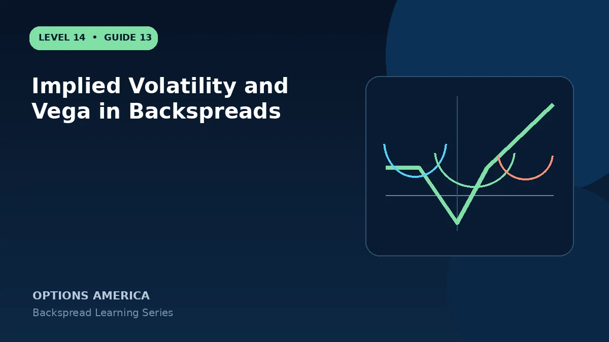

Learn how volatility expansion, crush and strike skew affect the short option and multiple long options in a backspread.
Positive vega
Two long options commonly contribute more vega than one short option, so a broad IV rise can increase theoretical value. Multiply net vega by quantity and contract multiplier to understand dollar exposure.
Volatility crush
After earnings, IV can fall sharply across all legs. A large favorable price gap may overwhelm the crush, but a modest move can leave the trade in its loss valley while long premium contracts.
Skew
The short and long strikes may trade at different IV and respond differently during a move. Put skew is especially important in put backspreads, where downside long options may already be expensive.
Scenario testing
Model several stock prices with separate IV changes at both strikes. A one-number vega approximation is useful only for small, parallel changes and can miss skew dynamics.
A practical example
A backspread has net vega +0.18, or about +$18 per IV point per unit. A five-point crush implies roughly −$90 before delta, gamma and theta effects.
This simplified example focuses on selected expiration outcomes; live prices and risks will differ. Live option prices also reflect the underlying price, time decay, rates, dividends, liquidity and transaction costs. Greeks are theoretical estimates, not guarantees.
Turn the payoff into a trading plan
Before entering implied volatility and vega in backspreads, write down the stock price, both strikes, expiration, contract ratio and total opening credit or debit. Then calculate the quiet-side result, maximum loss at the long-option strike and the far-move breakeven. These three checkpoints make the position easier to monitor and help prevent the attractive tail payoff from hiding the loss valley.
Test at least five scenarios: no move, a move to the short strike, a move to the long strike, a move to breakeven and a move well beyond breakeven. Repeat the exercise with implied volatility higher and lower and with less time remaining. The resulting range is more useful than a single payoff line because a live backspread can change substantially before expiration.
Finally, define the catalyst, maximum acceptable loss, review date and closing method in advance. Use one multi-leg order whenever possible, confirm every fill and recalculate the remaining position before changing any leg. Assignment, liquidity and transaction costs belong in the plan even when the expiration loss appears defined.
Frequently asked questions
Does higher IV always help?
No. Net vega changes and price may dominate.
Why can OTM longs be expensive?
Skew and event demand can raise their IV.
Do all legs experience the same crush?
Not necessarily.
Continue the Backspread Strategies cluster
Explore related guides: Theta and Time Decay in a Backspread · Call Ratio Backspread Explained · How to Choose a Backspread Option Ratio. For a structured sequence, use the free Level 14 – Backspread course.
Options involve risk and are not suitable for every investor. This material is educational and is not investment, tax or legal advice. Greeks are theoretical estimates, and contract terms and broker requirements can vary.